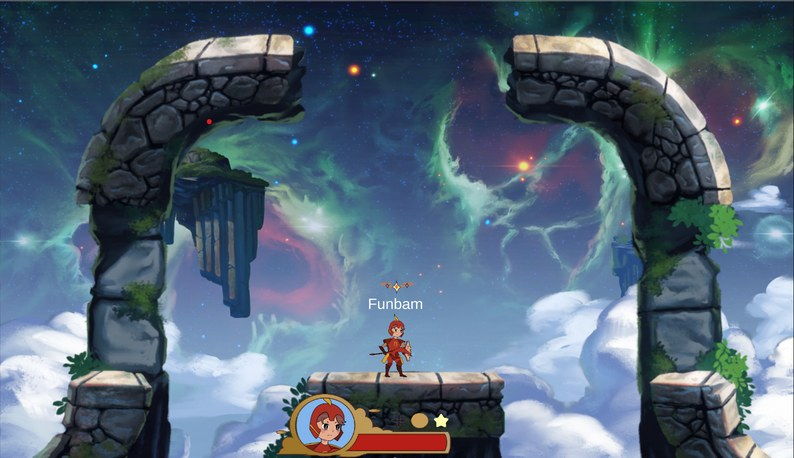

Astral Onslaught
Winter to Spring 2023 - 4 months

I joined a project of over 20 UCI students in developing an online multiplayer fighting game. This was my first experience working with a networked video game.
I was responsible for implementing the tarot card system which is a pickup system in game that mixes up gameplay with special abillities or drawbacks. I broke my wrist in the middle of the development cycle and lost a lot of time, but still learned a lot about working on large teams.